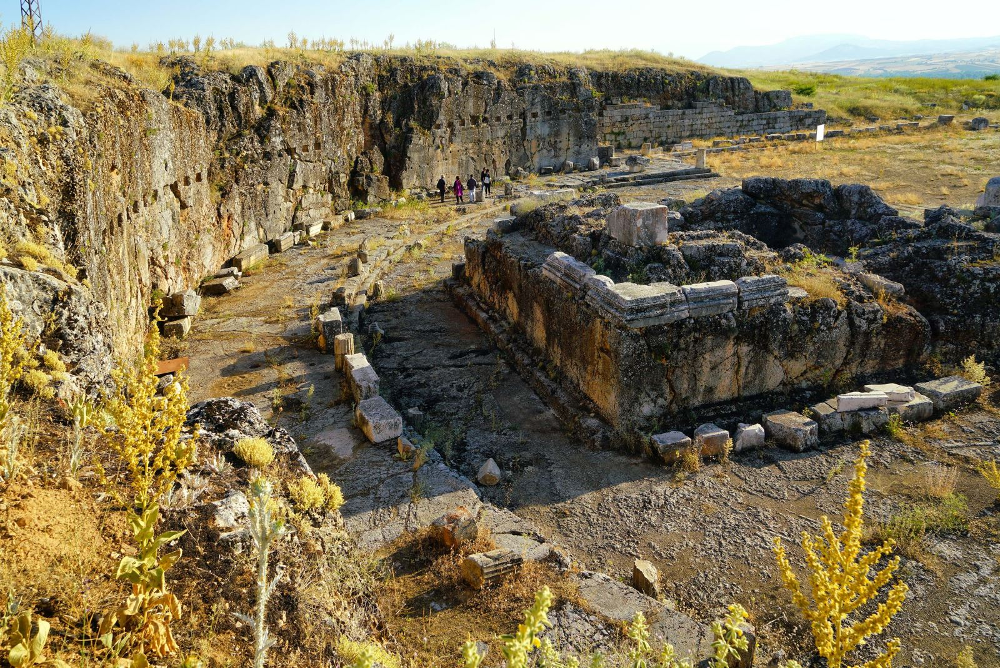
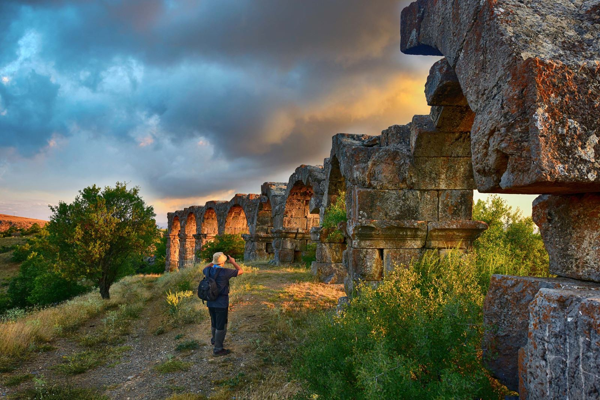
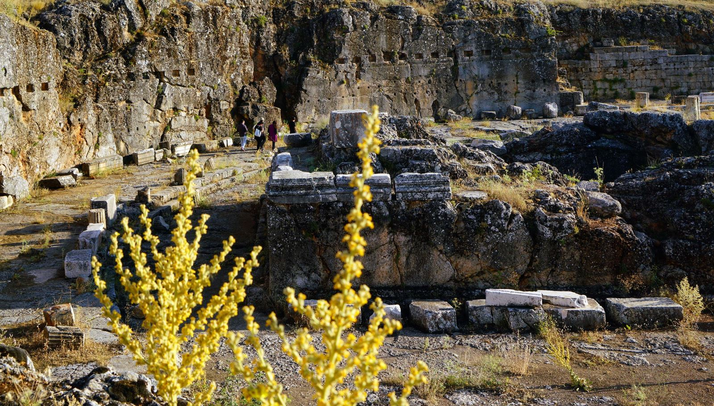

Pisidia Antik Kenti
Akdeniz Bölgesinde konumlanan Yalvaç, Isparta ilinin kuzeydoğusunda, Sultan Dağları’nın güney eteklerinde ve 1100 metre yükseklikte, 1415 kilometrelik bir alanı kaplayan, merkezde 20 bin, köyleriyle birlikte 100 bin kişiyi aşan nüfusuyla Isparta ilinin en büyük ilçesidir. Tarih bakımından zengin Yalvaç, antik dönemin önemli merkezlerinden biri olan ve bölgeye başkentlik yapmış Antiokheia antik kentiyle yan yana kurulmuştur. Kentin bitek çevresinin bir göstergesi olan en erken bulgular, günümüzden 8 milyon yıl öncesinde yaşamış “ At, Fil ve Gergedan” fosilleri bulunan, Tokmacık yöresiyle başlar. Daha sonra yakın çevredeki Neolitik Dönem (İ.Ö. 6 Bin) yerleşimleriyle devam eder. Kentin kuruluş tarihi ise İ.Ö. 3. Yüzyılda Helenistik krallıklardan Seleukid hanedanıyla başlar. İskenderin ölümünden sonra Anadolu’da devam eden paylaşım kavgalarının sonunda, Psidia Bölgesi Seleukos I. Nikator’un eline geçer. Helenistik dönemin özelliği olan fethedilen yerlerde, bölgedeki yerli halk üzerinde egemenlik kurmak için,stratejik yerlerde tahkimli kentler kurulur,yada kurulu olanlar tahkim edilirdi. Antiokheia kenti de, İ.Ö. 275 Tarihinde I. Antiokhos Soter’in, kurulu kenti tahkim ettikten sonra dedesi ve kendi adı olan Antiokhos’u kente vermesinden sonra tarih sahnesine çıkar. Ancak kentin yakınındaki Men Kutsal Alanı buluntularının İ.Ö. 4. yüzyıla dek ulaşmış olması bölgede bir Klasik dönem kültürünün de olduğunu gösterir. İ.Ö. 2 yüzyıldan itibaren, Avrupanın en güçlü devleti haline gelen Roma İmparatorluğu, doğuya doğru ilerleyerek, Anadolu’ya girer. Trakya’dan başlayan fetih, Çanakkale Boğazı üzerinden, Magnesia, Psidia ve Frigya’ya dek uzanır. Bu dönemde bölge Bergama Krallığı egemenliğinde kalır, ta ki İ.Ö. 133 yılında ölen Bergama Kralı III. Attalos vasiyetiyle, içinde Pisidia da olan, egemenliği altındaki tüm toprakları Roma’ya bırakıncaya kadar. Kent, en parlak dönemini Roma egemenliğinde yaşar. Bu dönemde yoğun imar faaliyetleri görülür. Augustus döneminde (İ.Ö 27-İ.S. 14) Psidia Bölgesinde 8 koloni kurulmuş, ancak konumu nedeniyle yalnızca Antiokheia’ya “ COLONIA CAESAREİA ” , yani Sezar’ın şehri ünvanı verilmiştir. Yine bu dönemde kent, hakim olduğu Psidia Bölgesinde, başkent konumuna yükselen önemli bir Roma kolonisi haline gelmiştir. Kent, imarı sırasında, aynı Roma kentinde olduğu gibi 7 tepe üzerinde kurulmuş 7 mahalleye bölünmüştür. İ.S 3. Yüzyıl sonlarına dek resmi dil latincedir. Bugün kenti gezerken görebileceğimiz yapıların büyük bir kısmı da, Roma Dönemi’nde bu yoğun imar faaliyetlerinden günümüze ulaşabilenlerdir. Kentin önemini fark eden Aziz Paulus, İ.S. 46 ve 58 yılları arasında Antiokheia’ya üç kez gelerek, Hristiyanlığın temellerini burada atmış ve dünyaya buradan yaymaya başlamıştır. Özellikle İ.S. 4. Yüzyılın başlarında Hristiyanlığın serbest bırakılmasıyla Bizans döneminde de önemini dini bir merkez olarak sürdürmüştür. İ.S. 8. Yüzyılda başlayan Arap akınları ve haçlı savaşlarıyla harabeye dönen Kent, yavaş yavaş tarih sahnesinden çekilmeye başlamıştır. Ancak 1176 yılında Selçuklu Sultanı II. Kılıç Arslan’ın Bizans ordusunu yendiği ve Yalvaç yakınlarında yapılan Myriakephalon Savaşından sonra bölgeye yerleşen Türkler, kente, eski kültürel merkez özelliğini yeniden kazandırmışlardır. İnanç turizminin önemli merkezleri arasında yer alan antik kentte ilk kazılar 1924 yılında, Atatürk’ün imzası da bulunan resmi izin belgesi ile, Amerikalılar tarafından başlatılır. Kentte, yakın dönemde ve yoğunluklu olarak 1990 yılından itibaren Yalvaç Müzesi ve Yalvaç Belediyesi işbirliğinde çeşitli kurtarma kazıları yapılmış olmasına karşın düzenli olarak kazılara 2008 yılında başlanmıştır. Süleyman Demirel Üniversitesi Arkeoloji Bölümü tarafından iki yıldır yürütülen kazılara Doç. Dr. Mehmet Özhanlı başkanlık yapmaktadır. Bilimsel ve düzenli kazılara başlanalı henüz iki yıl gibi bir süre geçmesine rağmen pek çok önemli eser ve bulguya ulaşılmıştır. BATI KAPISI Kentin iki kapısından biri güneyde diğeri batıda konumlanır. Batıda bulunan ve aynı zamanda ana giriş kapısı olan anıtsal yapı, 12 metre yüksekliğinde, 24 metre eninde ve üç kemerlidir. İki yandan sur duvarlarıyla birleşir. Kemerlerin üzerinde konumlanan alınlıkta, cephenin odağını, karşılıklı diz çökmüş, flama ve standart taşıyan iki Persli kabartması oluşturur. Plasterler üzerinde ise girland taşıyan Nikeler bulunur. Kapının dış yüzündeki arşitravda bronz harflerle; “ İmparator Caesar Traianus Hadrianus Augustus için; tanrılaştırılan Nerva’nın torunu, tanrılaştırılan Traianus’un oğlu, büyük rahip, 13. kez tribunus, 3. kez konsül, vatanın babası ve Sabina Augusta için ....koloni.”, iç yüzünde “C. Julius Asper Pansinianus, 5. kez belediye başkanı, binbaşı, kendi parasıyla yaptırıp süsledi.” yazar. Arşitrav üzerinde ki frizde Hippocamp, Triton, Amazon kalkanı, zırh ve çeşitli silah kabartmaları bulunmaktadır. Kapı, Hadrian için İ.S. 120 yılından sonra yapılmış, İ.S. 200 yılında kazanılan bir savaşla da zafer takı olarak yeniden düzenlenmiştir. Kapıdan girildiğinde, ortadaki kemerin aksında, kuzeye doğru uzayan küçük şelale çeşmesi, kapıdan sonraki geniş caddeyi ikiye ayırır. Yolun hemen doğu yanında, Bizans dönemine ait 17 adet işlik sıralanır. Bu yol, 10 metre ileride kentin ana caddesine ulaşır. ANA CADDE Kapıdan sonra, son yıllardaki kazılarla ortaya çıkarılmış olan, kentin kanalizasyon sistemi çöküntüsünü ve yüzyıllarca işleyen araba tekerleklerinin izlerini görebileceğimiz, Doğu-Batı caddesine ( Decumanus Maximus ) ulaşılır. Cadde, iki yanında yerleşmiş çeşitli yapılarla doğuya doğru 200 metre ilerledikten sonra, kentin ikinci ana caddesi olan Kuzey-Güney uzanımlı caddeyle ( Cardo Maximus) birleşir. İkinci caddede aynı şekilde iki yanında yerleşmiş yapılarla kuzeye doğru ilerler. Bu cadde, kuzeyde Anıtsal Çeşmeyle son bulur. TİYATRO Doğu-batı uzanımlı caddenin ortalarına yakın,caddenin kuzey kenarında konumlanır. Greko-Romen planlı olan tiyatro iki diazomalıdır ve caveası yarım daireden daha geniş bir açı yapar. Tiyatronun kuzey yarısı (Hellenistik özellikte) yamaca otururken;güney yarısı (Roma özelliğinde) tonozlarla taşınır. Cadde üzerinde konumlanmış olan bu tonozlar,caddeyi,caveanın altında 55 metrelik bir tünelden geçirir. Sahne binasının yalnızca temellerinin olması sahnenin ahşap malzemeli yapıldığını gösterir. Antiokheia tiyatrosu 15.000 kişilik Pamphylia Aspendos tiyatrosuyla karşılaştırılır. Tiyatro,Pisidia’nın diğer önemli kentleri olan Sagalassos,Selge ve Termessos tiyatrolarından da büyüktür. TİBERİUS ALANI Kuzey-Güney caddesinin hemen güney başlarında,Augustus Tapınağı ile cadde arasında konumlanır. İ.S. 25-50 yıllarına tarihlenen alan, 30 x 70 metre ölçülerindedir. Kentin merkezinde olması ve Kutsal Alan’a yakınlığı da oldukça hareketli olan bu alanın kent yaşamının kalbi olduğunu göstermektedir. Alanın iki yanındaki sütunlu portükolar arkasında bulunan dükkanların kazısında elde edilen buluntulardan anlaşıldığına göre ,meydanda ,yiyecek ve içki dükkanları bulunur. Alanın doğu ucunda,Propylon’un önünde,kalkan biçimli bir bloğa,bronz harflerle oluşturulmuş yazıtta “TİTUS OĞLU,SERGİA KÜTÜĞÜNE KAYITLI,TİTUS BAEBİUS ASİATİKUS,AEDİL (Belediye Başkanı), 3.000 AYAK (880 metre ),KENDİ PARASINDAN DÖŞEDİ” cümlesi okunur. Bu yazıttan anlaşıldığı üzere her iki cadde ve bu alanın zemin döşemesi belediye başkanı Asiatikus Baebius tarafından yaptırılmıştır. Sözü edilen yazıttan günümüze ,üzerinde bronz harf delikleriyle küçük bir parça ulaşmıştır ve orijinal yerinde görülebilmektedir. PROYLON Tiberius Alanının sonlandığı noktada başlayan on iki basamaklı temel yapısı,üstteki düzlükte bulunan Augustus Tapınağı’na geçişi sağlayan anıtsal giriş Propülon’a aittir. Üç kemerli girişi ve plastik süslemeleriyle Batı Kapısı dahil bir çok yapıya esin kaynağı olmuştur. Yapı,Actium deniz savaşını kazanarak Augustus ünvanı alan Octavianus adına yapılmıştır. Üzerindeki yazıttan İ.S 1. Yüzyıla tarihlenir. AUGUSTUS TAPINAĞI Kentin en yüksek noktasında kayaların oyulmasıyla elde edilen düzlükte inşa edilmiştir. Ortada konumlanan tapınak,içinde ana kayadan kült odası bulunan,12 basamakla çıkılan 4 sütunlu bir prostylostur. Arşitrav üzerindeki frizde boğa başları ve girlandlar işlenmiştir. Tapınağın arkasında yarım daire şeklinde bir sütunlu galeri (Portiko) vardır. Sütunlu galerinin sonlandığı köşelerde de,kuzey ve güney kenarlarda uzanan stoalar başlar. Stoalar tek katlıyken, yarım daire sütunlu galeri iki katlı inşa edilmiştir. Kaya duvarda görülen düzenli dörtgen oyuklar da ikinci katı taşıyan ahşap hatılların geçme yuvalarıdır. Alan ilk olarak,erken dönemlerde ana tanrıca Kybele tapınımına sahne olur,daha sonra sırasıyla Men Tapanınağı, Augustus Tapınağı ve geç dönemde de açık hava Kilisesi olarak kullanılmıştır. AZİZ BASSUS KİLİSESİ Tiberius Alanının tam karşısında,caddenin batı yanında bulunur. Caddeden, apsisiyle dikkat çeken yapı Latin Haçı şeklinde plana sahiptir. 4. Yüzyıla tarihlenen kilisede yapılan kazılar sırasında ele geçen demir bir madalyon üzerinde; bir yüzünde Diocletianus Dönemi azizlerinden Neon,Nikon ve Heliodorus’un, diğer yüzde Antiokheia’lı Bassus’un isimleri okunur. Bundan dolayı kilise Aziz Bassus diye nitelenmiştir. ANITSAL ÇEŞME VE SU KEMERLERİ Kuzey-güney Caddesinin kuzey ucunda konumlanır. Geniş bir “U” şeklinde planlanmış yapı,su kemerlerinden gelen suyu depolayıp düzenleyerek kente dağıtmak için yapılmıştır. Yapı 27 x 3 metre boyutlarında,suyu toplayan bir rezervuar, 9 metre yüksekliğinde süslü bir cephe ve önündeki 27 x 7 metre boyutlarında,1.5 metre derinliğindeki havuz kısımlarından oluşur. Anıtsal Çeşme (Nympheum),kentin Colonia Caesareia adını alıp,başkent konumuna ulaştığı İ.S. 1. Yüzyılın ilk yarısına tarihlenir. Anadolu’nun hemen her antik kentinde gördüğümüz su iletim sisteminin belkemiği olan kemerlerin en güzel örneklerinden biri Antiokheia’dadır. Deniz seviyesinden 1465 metre yüksekliğinde Suçıktı kaynağından alınan su,bazen açılan kanallarda,bazen tüneller içinde,bazen de tek yada iki katlı kemerler üzerinde,pişmiş toprak ve taş künklerle, yaklaşık 11 km. boyunca arazinin eğimi ve karşılaşılan engeller veya dere yataklarına göre bulunan uygun çözümlerle,1178 metre yüksekliğindeki Anıtsal Çeşmenin rezervuarına taşınır. 800 metre uzunluğundaki su kemerleri de Anıtsal Çeşme gibi İ.S. 1 yüzyılda inşa edilmişlerdir. HAMAM Kentin kuzeybatı köşesinde,çeşme binasına 150 metre mesafede konumlanan hamam oldukça iri ve sağlam yapısıyla dikkat çeker. Kazılar sonucunda 7 mekanı açılan,70 x 55 metre boyutlarındaki büyük ve düzgün bloklardan oluşan taş örgülü yapının önemli bir kısmı toprak altındadır ve planı tam anlaşılamamıştır. Hemen doğusundaki alanda kurulmuş olan ve hamamla bağlantılı palaestra (beden eğitimi alanı),yaklaşık olarak 38 x 29 metre boyutlarındadır ve sütunlu bir galeri ile çevrilmiştir. Hamam, su sistemi ve çeşme gibi,İ.S. 1. Yüzyılın ilk yarısına tarihlenmektedir. BÜYÜK BASİLİKA (ST. PAULUS KİLİSESİ) Antiokheia’nın en önemli yapılarından biri olan Büyük Basilika,kentin batı sınırında konumlanır. 70 x 27 metre boyutlarındaki yapı, doğu-batı yönünde uzanır. Basilikal planın tüm öğelerini yansıtan yapı,üç nef ve bir yarım daire apsisten oluşmaktadır. Orta nef iki yandaki dar neflerden 13’er sıralık iki sütun dizisiyle ayrılır. Orta nefin zemini,kırmızı,sarı,beyaz ve siyah tesseralardan oluşmuş, geometrik ve bitkisel motiflerle bezeli mozaikle kaplıdır. Mozaiğin apsis önündeki bölümünde bulunan bir yazıtta,381 yılındaki Konstantinopolis Konsil’inde Antiokheia’yı temsil eden ve Orthodoks mezhebinin kurucularından biri olan Başpiskopos Optimus’un ismi bulunur. Bu isim yapıyı 4. Yüzyıla tarihler. Ancak ondan öncesi de vardır, St. Paulus’un İ.S. 46-58 yılları arasında kente üç kez gelerek,şimdi kilisenin temelleri altında olan sinagog’da vaaz vermiştir ve Hristiyanlığı buradan dünyaya yaymaya başlamıştır. Ayrıca, burası Erken Hristiyanlık kiliselerinin ilk iki örneğinden biridir de. STADİON Surların dışında,Basilika’nın batı karşısındaki tarlalar arasında,küçük bir vadi şeklindedir. Atletizm ve çeşitli spor karşılaşmalarının yapıldığı “U” şeklindeki yapı 190 metre uzunluğunda ve 30 metre genişliğindedir. Henüz bir araştırma yapılmadığı için kapsamlı bir bilgi bulunmaz.


